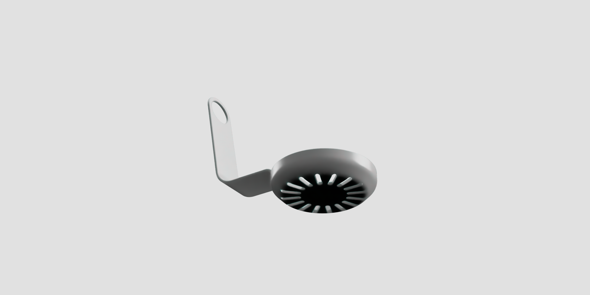
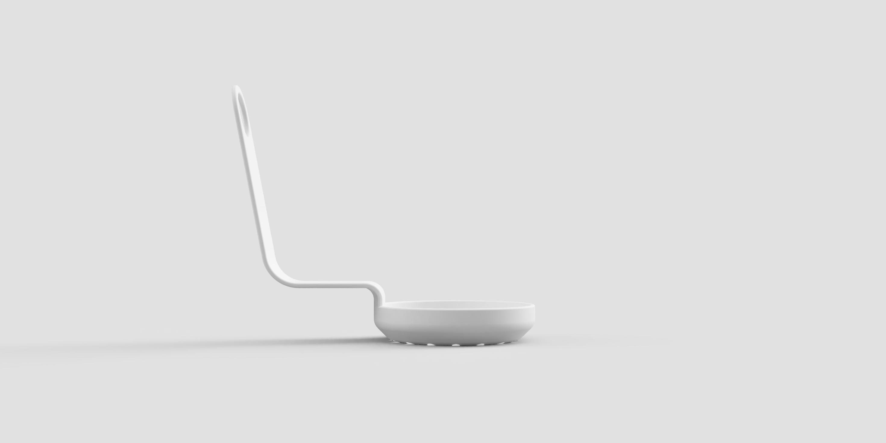
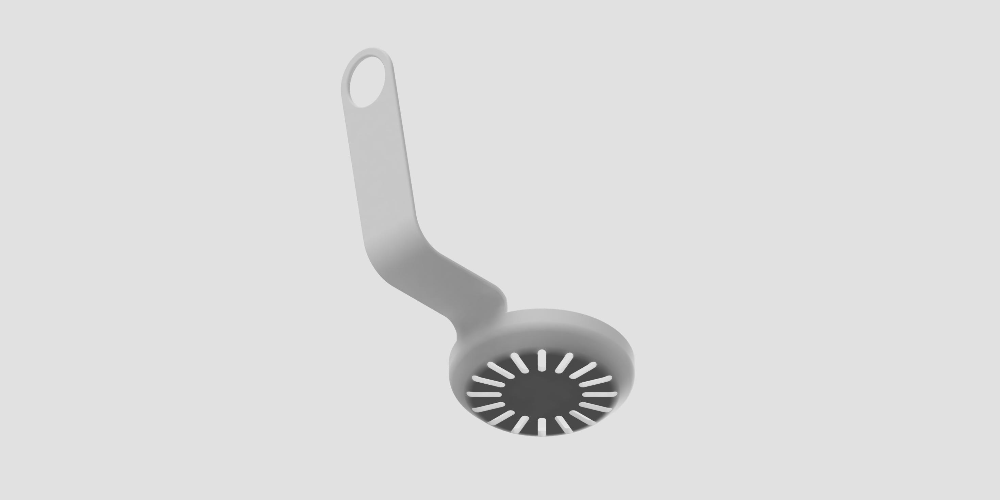
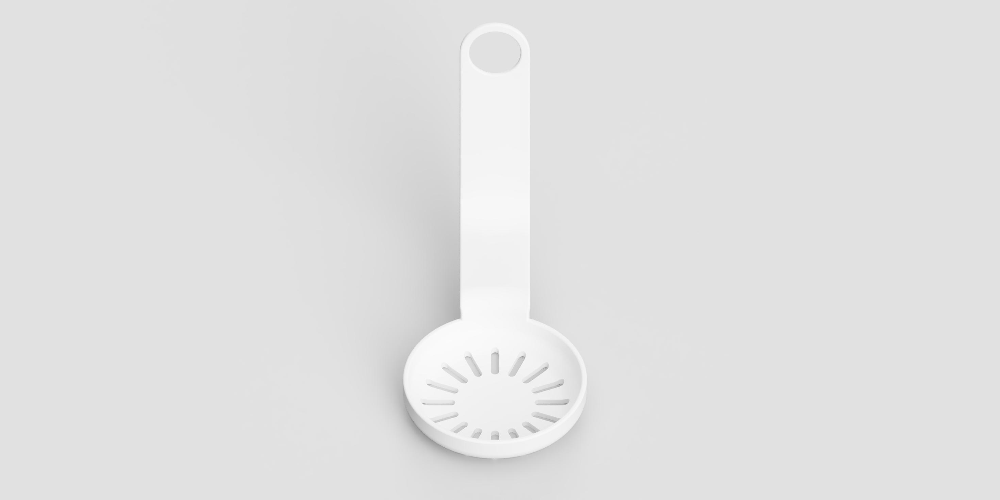

A cleaner way to
empty your sink.
Oli rethinks the kitchen sink strainer with an ergonomic handle that stays above the waste zone—so lifting and emptying is clean, fast, and effortless.

Most sink strainers aren’t designed for people.
Traditional strainers force you to touch soggy waste because the handle is buried in the center. This leads to unhygienic handling and clogged drains.
Buried Handles
Traditional center "plugs" get covered in waste, making them unpleasant to touch.
Dirty Hands
Emptying usually requires direct contact with food scraps and dirty water.
Slow Drainage
Poorly designed catchments lead to water backup and slow kitchen workflows.
Designed so your hand stays out of the waste zone.
Oli features an L-shaped handle that follows the wall of your sink. The grab point is raised high enough to ensure you never touch the mess.
Lift. Empty. Done.

Thoughtful Engineering


The handle is designed with rounded edges to prevent injury and ensure a comfortable grip. It fits seamlessly against the sink wall to stay out of your way while washing dishes.
Technical Specifications
Be the first to get Oli.
Join the waitlist for early access and launch updates.
Get in touch.
Questions or feedback? We’d love to hear from you.